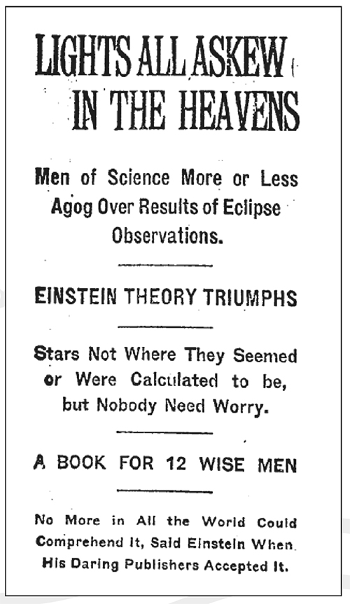

Suốt nhiều ngày, tờ New York Times, với cảm thức của chủ nghĩa dân túy chếnh choáng, đã đẩy tính phức tạp của thuyết này lên như là một sự xúc phạm tới hiểu biết thông thường. Ngày 11 tháng Mười một, tờ này cho đăng một bài xã luận: “Tin tức này thật sự gây sốc, khiến người ta thậm chí sẽ lo sợ cho cả tính đáng tin của các bảng nhân chia.” Tờ báo quả quyết, ý tưởng “không gian có giới hạn” rõ ràng là ngớ ngẩn. “Về bản chất mà nói thì không gian đơn giản là không [có giới hạn], thế thôi – đó là nói theo cách không chuyên, dù cũng đúng là như thế đối với những nhà toán học cấp cao.” Năm ngày sau đó, tờ báo tiếp tục quay lại chủ đề này: “Những nhà khoa học đã tuyên bố không gian có điểm tận cùng ở nơi nào đó buộc phải cho chúng ta biết còn có cái gì nằm bên ngoài nó.”
Cuối cùng, một tuần sau bài báo đầu tiên, tờ báo này thấy rằng những từ ngữ điềm tĩnh, vui vẻ hơn là gây kinh ngạc có thể hữu ích hơn. Tờ báo chỉ ra: “Các nhà khoa học người Anh dường như đã bị rơi vào một thứ giống như một cơn hoảng loạn tri thức khi nghe đến việc xác minh bằng hình ảnh học thuyết của Einstein. Nhưng rồi dần dà họ hồi phục khi nhận ra rằng Mặt trời vẫn mọc – một cách rõ ràng – từ phía Đông và sẽ vẫn tiếp tục như vậy trong thời gian sắp tới.”
Một phóng viên thường trực gan dạ làm việc cho tờ báo ở Berlin xin được một cuộc phỏng vấn Einstein tại căn hộ của ông vào ngày 2 tháng Mười hai, và trong quá trình này, ông ta đã tung ra một câu chuyện ngụy tác về thuyết tương đối. Sau khi mô tả phòng làm việc ở tầng trên cùng của Einstein, phóng viên này khẳng định: “Chính từ thư viện cao ngất này mà nhiều năm trước ông đã quan sát được một người ngã xuống khỏi mái nhà bên cạnh – may mắn thay, người đó rơi xuống một đống rác mềm – và hầu như không bị chấn thương. Người đó nói với Tiến sỹ Einstein rằng khi rơi xuống, ông ta không trải nghiệm cảm giác thường được xem là tác dụng của trọng lực.” Tờ báo này viết, đó là cách mà Einstein đạt được “sự thăng hoa hay học thuyết bổ sung” cho định luật hấp dẫn của Newton. Như một trong những tiêu đề câu khách của tờ báo viết: “Cũng được truyền cảm hứng như Newton, nhưng bởi một người rơi từ mái nhà, thay vì một quả táo rơi từ trên cây”.
Câu chuyện này, đúng như lời tờ báo, quả thực là “một đống rác mềm”. Einstein đã làm thí nghiệm tưởng tượng của mình khi còn làm việc tại Cục Cấp bằng Sáng chế ở Bern năm 1907 chứ không phải ở Berlin, và nó không liên quan gì đến chuyện một người ngã xuống từ mái nhà. Ông viết cho Zangger khi bài báo được xuất bản: “Những lời ngớ ngẩn tờ báo đó nói về tôi thật bệnh hoạn.” Nhưng ông hiểu và chấp nhận rằng đó là cách mà báo chí hoạt động. “Kiểu phóng đại này đáp ứng được ý thích nhất định của công chúng.”
Quả thật công chúng có mong muốn đáng kinh ngạc là hiểu được thuyết tương đối. Tại sao lại như vậy? Thuyết này có vẻ như nói nhảm, đúng, nhưng sự bí ẩn của nó lại rất hấp dẫn. Không gian bị cong? Tia sáng bị bẻ cong? Thời gian và không gian không tuyệt đối? Thuyết này có sự pha trộn tuyệt vời của những từ Hả và Chà có thể thu hút được trí tưởng tượng của công chúng.
Điều này bị đả kích trong một bức tranh biếm họa của Rea Irvin đăng trên tờ New Yorker, trong bức tranh đó, một người lau chùi nói nhảm, một bà mệnh phụ mặc áo lông, một người gác cửa, những đứa trẻ và những người khác vò đầu bứt tai phỏng đoán lung tung khi họ đi xuống phố. Câu chú thích trích dẫn từ lời Einstein: “Người ta chậm làm quen với ý tưởng rằng bản thân trạng thái vật lý của không gian là thực tại vật lý tối hậu.” Như Einstein viết cho Grossmann: “Giờ người đánh xe ngựa và người phục vụ nào cũng tranh cãi xem thuyết tương đối có đúng hay không.”
Những người bạn của Einstein thấy mình bị đám đông vây quanh mỗi khi họ giảng về nó. Leopold Infeld, người sau này làm việc với Einstein, khi đó là một giáo viên trung học tại một thành phố nhỏ của Ba Lan. Ông nhớ lại: “Vào thời điểm đó tôi cũng làm điều như hàng trăm người khác trên khắp thế giới. Tôi có một bài trình bày trước công chúng về thuyết tương đối, và người ta xếp hàng trong một buổi tối mùa đông lạnh giá, đông đến độ không có đủ chỗ dù trong hội trường lớn nhất thành phố.”
Điều tương tự cũng xảy ra với Eddington khi ông phát biểu tại Cao đẳng Trinity, Cambridge. Hàng trăm người nêm kín hội trường, và hàng trăm người khác không được vào. Trong nỗ lực để làm cho đề tài này dễ hiểu, Eddington nói rằng nếu ông chuyển động với vận tốc gần bằng vận tốc ánh sáng thì ông sẽ chỉ cao ba foot. Chi tiết này được giật thành nhan đề cho bài báo. Tương tự, Lorentz cũng có một bài phát biểu trước đám đông khán giả đổ về chật ních. Ông so sánh Trái đất với một phương tiện chuyển động như là cách làm ví dụ minh họa cho thuyết tương đối.
Chẳng bao lâu, nhiều nhà khoa học và nhà tư tưởng vĩ đại nhất bắt đầu viết sách giải thích thuyết này, gồm Eddington, von Laue116, Freundlich, Lorentz, Planck, Born, Pauli và thậm chí nhà triết học và toán học Bertrand Russell117. Tổng cộng, có trên 600 cuốn sách và bài báo về thuyết tương đối được xuất bản trong sáu năm đầu sau sự kiện quan sát nhật thực.
Bản thân Einstein cũng có cơ hội giải thích thuyết này bằng ngôn ngữ của mình trên tờ The Times của London, tờ báo này đã mời ông viết một bài báo có nhan đề “Thuyết tương đối là gì?” Nó quả thật khá dễ hiểu. Cuốn sách nổi tiếng của ông về đề tài này, Thuyết Tương đối Hẹp và Rộng, đã được xuất bản lần đầu bằng tiếng Đức năm 1916. Giờ đây, sau sự kiện quan sát nhật thực, Einstein đã xuất bản nó bằng tiếng Anh. Đầy ắp những thí nghiệm tưởng tượng mà ai cũng có thể dễ dàng hình dung, nó trở thành cuốn sách bán chạy nhất với các ấn bản cập nhật xuất hiện liên tục suốt những năm sau đó.
Einstein đã có đủ những yếu tố cần thiết để trở thành một ngôi sao. Biết rằng công chúng nóng lòng muốn có một người nổi tiếng mới trên thế giới, các phóng viên hài lòng khi thấy thiên tài mới được phát hiện này không phải là một người buồn tẻ hay một học giả quá đỗi dè dặt. Thay vào đó, ông là người đàn ông tứ tuần, nằm đâu đó trong phổ từ đẹp trai tới đặc biệt đẹp trai, với bộ tóc xù hoang dại, đôi mắt sáng thân thiện và sẵn sàng chia sẻ kiến thức.
Người bạn Paul Ehrenfest của ông cho rằng sự chú ý của báo giới khá lố bịch. Ông nói đùa: “Những chú vịt báo chí giật mình hoảng hốt vừa vỗ cánh loạn xạ vừa quàng quạc thật to.” Đối với em gái của Einstein, Maja, người lớn lên vào thời điểm trước khi mọi người thích sự nổi tiếng, thì sự chú ý này thật lạ lùng và cô nghĩ rằng ông hẳn phải rất khó chịu với việc này. Chưa hoàn toàn hiểu rõ rằng giờ ông đã nổi tiếng trên toàn thế giới, Maja không giấu nổi sự ngạc nhiên: “Có một bài báo về anh trên một tờ báo của Lucerne đấy! Em hình dung chuyện này sẽ khiến anh khó chịu lắm vì nó viết về anh quá nhiều.”
Einstein quả thật nhiều lần than vãn về sự nổi tiếng này. Ông phàn nàn với Max Born rằng ông đã bị “báo giới và những kẻ bất hảo khác săn lùng”. “Nó mệt mỏi đến nỗi tôi chẳng thở được, nói gì đến việc làm gì khác.” Với một người bạn khác, ông vừa nói vừa vẽ ra một bức tranh sinh động hơn về sự nổi tiếng: “Từ khi giới báo chí tràn đến, tôi ngập lụt trong các câu hỏi, những lời mời, những đề nghị đến độ mơ thấy mình bị thiêu trong Hỏa ngục và tay đưa thư của Quỷ không ngừng gầm lên với tôi, hắn ta ném xấp thư vào đầu tôi vì tôi chưa trả lời những bức thư cũ.”
Tuy nhiên, ác cảm của Einstein với đối sự nổi tiếng tồn tại trên lý thuyết hơn là trên thực tế. Ông có thể tránh được, thật ra khá dễ dàng, tất cả các cuộc phỏng vấn, những đợt công bố, chụp hình và xuất hiện trước công chúng. Những người thật sự không thích ánh đèn sân khấu sẽ không muốn xuất hiện cùng Charlie Chaplin trên thảm đỏ giới thiệu phim, như gia đình Einstein.
Sau khi tìm hiểu về ông, C. P. Snow đã nói: “Ông thích những người chụp ảnh và đám đông. Ông có tố chất của một người thích thể hiện và của một diễn viên nghiệp dư. Nếu không có tố chất đó, sẽ không có người chụp ảnh và đám đông nào cả. Chẳng có gì dễ hơn là tránh sự nổi tiếng. Nếu người ta thật sự không muốn có nó, người ta sẽ không có nó.”
Phản ứng của Einstein đối với sự nịnh bợ cũng phức tạp như phản ứng của vũ trụ đối với lực hấp dẫn. Ông vừa bị thu hút, vừa bị khó chịu bởi những chiếc máy ghi hình, ông yêu thích sự nổi tiếng nhưng cũng hay phàn nàn về nó. Mối quan hệ yêu – ghét của ông với sự nổi tiếng và các phóng viên có lẽ sẽ còn là bất thường cho đến khi người ta suy ngẫm về sự hòa trộn những cảm xúc vui thích, thú vị, căm ghét và khó chịu mà nhiều người nổi tiếng cảm thấy.
Một lý do mà Einstein – không giống như Planck, Lorentz hay Bohr – trở thành biểu tượng là do ông đã xem đó là vai diễn mà ông có thể và sẽ đảm nhận vai diễn đó. Nhà vật lý Freeman Dyson (không liên quan gì tới nhà khoa học Dyson trong Hội Thiên văn Hoàng gia Anh) đã viết: “Những nhà khoa học trở thành biểu tượng chắc chắn không chỉ là thiên tài, mà còn phải là một nghệ sĩ trình diễn, biết nương theo công chúng và tận hưởng sự ca ngợi của công chúng.” Einstein đã trình diễn. Ông đã trả lời các cuộc phỏng vấn, rắc lên họ những câu cách ngôn vui vẻ và biết chính xác điều gì làm nên câu chuyện hay.
Thậm chí Elsa, hoặc có lẽ đúng hơn, đặc biệt là Elsa, rất thích được chú ý. Bà như là người bảo vệ chồng, tỏ ra đáng sợ bằng giọng điệu và ánh nhìn áp đảo khi những kẻ xâm nhập không mời mà đến bước chân vào quỹ đạo của ông. Nhưng thậm chí hơn cả chồng mình, bà thích sự vinh danh và tôn kính đến cùng với sự nổi tiếng. Bà bắt đầu thu phí chụp ảnh ông và tặng số tiền này cho các hội từ thiện để cung cấp thực phẩm cho trẻ em nghèo đói ở Vienna và các nơi khác.
Trong thời kỳ nổi tiếng đó, khó mà nhớ được một thế kỷ trước những người đạo mạo đã tránh xa sự nổi tiếng và xem thường những kẻ giành được nó đến nhường nào. Đặc biệt trong lĩnh vực khoa học, sự chú trọng vào cá nhân dường như không thích hợp. Khi người bạn của Einstein, Max Born xuất bản một cuốn sách về thuyết tương đối sau khi có những quan sát nhật thực, ông đã đưa vào ấn bản đầu tiên một tấm hình của Einstein ở ngay trang đầu và một tiểu sử ngắn gọn về ông. Max von Laue và những người bạn khác của cả hai người đều hoảng sợ. Những điều như vậy không thuộc về một cuốn sách khoa học, dù là một cuốn sách được ưa chuộng, von Laue viết như vậy cho Born. Born đành bỏ phần đó đi trong ấn bản sau.
Do đó, vào năm 1920, Born đã thất vọng khi có thông báo rằng Einstein đã hợp tác với một nhà báo người Do Thái là Alexander Moszkowski – người chủ yếu viết sách hài hước và huyền bí – nhằm cho ra một cuốn tiểu sử. Cuốn sách tự quảng cáo, ở phần tiêu đề, là dựa trên các cuộc trao đổi với Einstein, và đúng là như vậy. Trong chiến tranh, ông Moszkowski thích giao du này đã làm bạn với Einstein, rất quan tâm tới các nhu cầu của Einstein và đưa ông tới gặp giới bán văn học hay tụ họp ở một quán cà phê ở Berlin.
Born là người Do Thái nhưng không thực hành tín ngưỡng Do Thái giáo mà muốn hòa nhập với xã hội Đức, và ông sợ rằng cuốn sách này sẽ thổi bùng lên ngọn lửa bài Do Thái vốn đang âm ỉ. “Các học thuyết của Einstein đã được các đồng nghiệp đóng dấu là ‘Vật lý Do Thái’”, Born nhớ lại, ông nói đến quân đoàn người theo chủ nghĩa dân tộc Đức ngày một đông đảo đang bắt đầu nói xấu bản chất trừu tượng và cho rằng “chủ nghĩa tương đối” đạo đức là đặc điểm cố hữu trong các học thuyết của Einstein. “Và giờ thì có một tác giả người Do Thái, tác giả của nhiều cuốn sách với những nhan đề phù phiếm, muốn viết một cuốn sách cũng phù phiếm về Einstein.” Vì vậy, Born và vợ mình, bà Hedwig, người chưa bao giờ né tránh cơ hội nhiếc móc Einstein, đã tiến hành một cuộc vận động cùng với những người bạn khác để ngăn cản việc ông xuất bản cuốn sách.
Hedwig dọa nạt: “Anh phải rút giấy phép ngay và bằng một bức thư bảo đảm.” Bà cảnh cáo ông rằng “bọn báo chí cặn bã” sẽ sử dụng nó để làm nhem nhuốc hình ảnh của ông và cho ông là tay Do Thái tự quảng bá mình. “Một làn sóng khủng bố hoàn toàn mới và tồi tệ hơn nhiều sẽ được xổ ra.” Bà nhấn mạnh, tội ác không nằm ở điều ông nói, mà là thực tế rằng ông đang cho phép mình nổi tiếng:
Nếu tôi không biết anh rõ, tôi chắc chắn sẽ không thừa nhận những động cơ vô tội trong những trường hợp thế này đâu. Tôi sẽ hạ thấp nó thành sự phù phiếm. Cuốn sách này sẽ làm thành bản án tử hình luân lý của anh đối với cả bốn hoặc năm người bạn của anh nữa. Về sau, nó cũng có thể trở thành bằng chứng xác nhận rõ ràng nhất cho lời cáo buộc tự quảng bá bản thân.
Một tuần sau, chồng bà cũng đưa thêm một lời cảnh báo rằng tất cả những địch thủ chủ trương bài Do Thái của Einstein “sẽ chiến thắng” nếu ông không ngăn việc xuất bản lại. “‘Những người bạn’ Do Thái của anh [tức Moszkowski] sẽ làm được điều mà cả một đám bài Do Thái không làm được.”
Nếu Moszkowski từ chối rút lui, Born khuyên Einstein nên xin một lệnh giới hạn xuất bản từ văn phòng công tố. Ông nói: “Anh phải đảm bảo việc này sẽ được báo chí đưa tin. Tôi sẽ gửi cho anh các chi tiết về nơi anh cần nộp giấy tờ.” Giống nhiều người bạn khác của họ. Born lo lắng rằng Elsa chính là người dễ bị lóa mắt trước những cám dỗ nổi tiếng. Như ông nói với Einstein: “Anh vẫn là một cậu nhóc trong những vấn đề này. Tất cả chúng tôi đều yêu quý anh, và anh phải nghe theo những người sáng suốt (không phải vợ anh).”
Einstein làm theo lời khuyên của những người bạn, ông gửi cho Moszkowski một bức thư bảo đảm yêu cầu không in tác phẩm “tuyệt vời” của anh. Nhưng khi Moszkowski từ chối rút lui, Einstein không thực hiện biện pháp pháp lý. Cả Ehrenfest và Lorentz đều đồng ý rằng ra tòa sẽ chỉ đổ thêm dầu vào lửa và khiến vấn đề tồi tệ hơn, nhưng Born phản đối. Ông nói: “Anh có thể trốn sang Hà Lan”, ý nói đến chuyện Ehrenfest và Lorentz hiện đang nỗ lực lôi kéo Einstein sang đó, nhưng những người bạn Do Thái vẫn còn ở lại Đức của anh “sẽ bị ảnh hưởng bởi cơn khó chịu đó”.
Sự thờ ơ của Einstein cho phép ông tạo ra một không khí giải trí hơn là lo lắng. “Toàn bộ chuyện này hoàn toàn chẳng quan trọng gì đối với tôi, cả cơn chấn động, và ý kiến của từng cá nhân hay tất cả mọi người cũng vậy.” Ông nói: “Tôi sẽ sống qua tất cả những điều đang chờ đợi tôi như một người quan sát vô tư.”
Khi cuốn sách được xuất bản, nó khiến Einstein trở thành mục tiêu dễ nhắm vào cho những người bài Do Thái, họ sử dụng nó để củng cố cho luận điểm rằng ông là một kẻ tự quảng bá, đang cố biến khoa học thành cơ hội kinh doanh. Nhưng nó không gây ra nhiều chấn động trong công chúng. Không có “chấn động Trái đất” nào cả, như Einstein đã viết cho Born.
Nhìn lại thì cuộc tranh cãi về sự nổi tiếng dường như kỳ quặc, và cuốn sách có vẻ là một sai lầm vô hại. Sau này, Born thừa nhận: “Tôi đã xem qua và thấy nó không tệ như tôi nghĩ. Nó chứa đựng nhiều câu chuyện và giai thoại khá thú vị, vốn là đặc trưng ở Einstein.”
Einstein cũng biết cách không để sự nổi tiếng hủy hoại lối sống giản dị của mình. Trong một chuyến đi xuyên đêm tới Prague, ông lo sợ rằng các chức sắc hoặc những người tìm kiếm sự tò mò muốn chào mừng ông, vì vậy ông quyết định ở lại với vợ chồng người bạn Philipp Frank. Vấn đề là cả hai vợ chồng quả thật sống trong văn phòng của Frank tại phòng thí nghiệm vật lý, nơi Einstein từng làm việc. Vì vậy, Einstein ngủ trên một chiếc ghế xô-pha ở đó. Frank nhớ lại: “Thế có lẽ không tốt lắm cho một người nổi tiếng như thế, nhưng nó đúng với sở thích của ông ấy đối với lối sống giản dị và những tình huống trái ngược với quy ước xã hội.”
Trên đường từ quán cà phê về nhà, Einstein một mực nói rằng họ nên mua đồ ăn cho bữa tối để vợ Frank không phải đi mua. Họ chọn gan bê, vợ Frank nấu món này trên chiếc lò Bunsen ở phòng thí nghiệm của văn phòng. Bỗng nhiên, Einstein nhảy giật lên. Ông hỏi: “Chị làm gì thế? Chị định luộc gan với nước đấy à?” Vợ Frank cho biết đúng là mình đang làm thế. Einstein nói: “Điểm sôi của nước rất thấp. Chị phải dùng một chất có điểm sôi cao hơn chẳng hạn bơ hoặc mỡ ấy”. Từ đó trở đi, vợ Frank thường nhắc đến sự cần thiết phải rán gan là “thuyết Einstein”.
Sau bài giảng của Einstein vào tối hôm đó là một buổi tiệc nhỏ được khoa vật lý tổ chức, với nhiều bài phát biểu dạt dào tình cảm. Khi đến lượt Einstein đáp lời, ông lại tuyên bố: “Có lẽ sẽ thú vị và dễ hiểu hơn nếu tôi chơi một bản nhạc vĩ cầm, thay vì phát biểu.” Ông chơi một bản sonat của Mozart, mà theo lời Frank, với một “phong thái giản dị, chính xác và vì thế mà vô cùng cảm động”.
Buổi sáng hôm sau, trước khi ông lên đường, một anh chàng trẻ tuổi đã đến tìm ông tại văn phòng của Frank và một mực muốn cho ông xem một bản thảo. Người này khăng khăng nói rằng, trên cơ sở phương trình E = mc2, người ta có thể “sử dụng năng lượng trong nguyên tử để tạo ra những loại chất nổ đáng sợ”. Einstein từ chối thảo luận và gọi khái niệm này là ngớ ngẩn.
Từ Prague, Einstein đi tàu đến Vienna, nơi 3.000 nhà khoa học cùng các khán giả hào hứng đợi được nghe ông phát biểu. Tại nhà ga, người chủ trì cuộc tiếp đón đợi ông lên bờ từ khoang hạng nhất nhưng không thấy ông đâu. Ông ta nhìn xuống khoang hạng hai, và cũng không thấy ông ở đó. Cuối cùng, Einstein lững thững đi lên từ khoang hạng ba ở tít đầu kia, tay xách hộp đàn vĩ cầm trông như một nhạc sĩ. Ông nói với người tiếp đón: “Anh biết đấy, tôi thích đi khoang hạng nhất nhưng vì gương mặt tôi đang trở nên quá nổi tiếng, nên ngồi ở khoang hạng ba thì ít bị làm phiền hơn.”
Einstein nói với Zangger: “Với sự nổi tiếng, tôi trở nên ngày càng ngớ ngẩn, điều này tất nhiên là một hiện tượng cũng phổ biến.” Nhưng ông sớm hình thành một lý thuyết rằng sự nổi tiếng của ông, dù gây ra nhiều khó chịu, nhưng ít nhất là tín hiệu ưu tiên nồng nhiệt mà xã hội đang dành cho những người như ông:
Theo quan điểm của tôi, sự ngưỡng mộ các nhân cách cá nhân đơn lẻ luôn phi lý… Đối với tôi, thật không công bằng, thậm chí chẳng ra sao, khi chọn ra vài người để khâm phục hết mức, rồi quy gán cho họ những quyền lực siêu việt về trí tuệ và nhân cách. Đây là số phận của tôi và sự tương phản giữa tưởng tượng của quần chúng về các thành tựu của tôi với thực tế hết sức kệch cỡm. Trạng thái bất thường này là không chịu được, nhưng vì tôi có một suy nghĩ an ủi: đó là triệu chứng chào đón ở một thời kỳ được gọi là duy vật, nó khiến những người có tham vọng trong lĩnh vực tri thức và đạo đức trở thành anh hùng.
Một vấn đề với danh vọng là nó có thể gây ra sự ghen ghét. Nhất là trong vòng xoáy học thuật và khoa học, tự quảng bá bị xem là tội ác. Đó là sự ghét bỏ những người có được sự nổi tiếng cá nhân và quan điểm này càng bị làm cho trầm trọng bởi việc Einstein là một người Do Thái.
Trong bài viết giải thích thuyết tương đối cho tờ The Times của London, Einstein hài hước ám chỉ các vấn đề có thể phát sinh. Ông viết: “Theo thuyết tương đối, ngày nay ở Đức tôi được gọi là một người Đức làm khoa học, còn ở Anh tôi được xem là người Do Thái Thụy Sĩ. Nếu tôi bị xem là cái gai trong mắt thì các miêu tả sẽ bị đảo đi, và khi đó tôi sẽ trở thành một tay Do Thái Thụy Sĩ đối với người Đức, và một người Đức làm khoa học đối với người Anh.”
Điều đó không chỉ là bông lơn cho vui. Chỉ vài tháng sau khi trở nên nổi tiếng trên toàn thế giới, hiện tượng thứ hai đã xảy ra. Ông được cho biết rằng ông sẽ được trao huy chương vàng danh giá của Hội Thiên văn Hoàng gia Anh vào đầu năm 1920. Nhưng một cuộc phản đối của một nhóm người Anh đã khiến cho việc trao tặng danh hiệu bị hoãn. Đáng ngại hơn, một nhóm nhỏ đang lớn dần lên trong đất nước ông sống chẳng mấy chốc cũng bắt đầu phác họa ông là người Do Thái, hơn là một người Đức.
Einstein thích khoác cho mình cái vẻ của một người đơn độc. Dù ông có tiếng cười dễ lan tỏa giống như tiếng tru của một chú hải cẩu, nhưng đôi khi tiếng cười này mang âm điệu đau thương hơn là ấm áp. Ông thích chơi nhạc theo nhóm, bàn luận ý tưởng, uống cà phê đặc và hút xì-gà. Nhưng có một bức tường vô hình chia cách ông với gia đình và bạn thân. Bắt đầu với Hội nghiên cứu Olympia, ông thường xuyên lui tới các căn phòng khác nhau của tâm trí, nhưng ông lại né tránh những căn phòng trong trái tim.
Ông không thích bị ràng buộc, và ông có thể lạnh lùng với người thân trong gia đình. Thế nhưng, ông yêu tình bạn của những người bạn trí thức và có những tình bạn lâu dài suốt cuộc đời. Ông ngọt ngào với tất cả mọi người ở mọi lứa tuổi và tầng lớp xuất hiện trong tầm mắt của ông, ông hòa hợp với các nhân viên và đồng nghiệp, hiền từ đối với nhân loại nói chung. Miễn là mọi người không đòi hỏi nhiều hoặc là gánh nặng cảm xúc đối với ông, Einstein có thể sẵn sàng vun đắp tình bạn hoặc tình cảm.
Sự kết hợp của tính lạnh lùng và ấm áp tạo ra ở Einstein một sự xa cách có phần hài hước khi ông bồng bềnh lướt qua các khía cạnh con người trong thế giới của mình. Ông suy ngẫm: “Cảm giác nồng nhiệt của tôi đối với sự công bằng xã hội và trách nhiệm xã hội luôn tương phản một cách kỳ lạ với việc tôi không có nhu cầu giao tiếp trực tiếp với những người khác và những cộng đồng khác. Tôi thật sự là một ‘lữ khách đơn độc’, chưa bao giờ dành trọn vẹn con tim mình cho đất nước tôi, gia đình tôi, bạn bè tôi hoặc gia đình hiện tại; khi đối mặt với những mối ràng buộc này, tôi chưa bao giờ mất đi ý thức về khoảng cách và nhu cầu ẩn dật.”
Thậm chí các đồng nghiệp khoa học cũng kinh ngạc trước sự luân phiên giữa nụ cười hiền hậu mà ông ban cho mọi người nói chung, và sự thờ ơ mà ông thể hiện đối với những người gần gũi với mình. Leopold Infeld, người cộng tác với ông, nói: “Tôi chưa từng thấy ai đơn độc và xa cách như Einstein. Trái tim của ông ấy không bao giờ rỉ máu, và ông ấy trải nghiệm cuộc sống với sự thích thú nhẹ nhàng và sự thờ ơ về cảm xúc. Sự tử tế và đứng đắn cực độ của ông ấy không mang tính cá nhân và dường như đến từ hành tinh khác vậy.”
Max Born là một người bạn trong cả đời sống riêng tư lẫn sự nghiệp, cũng lưu ý đến tính cách này, và dường như nó giải thích cho khả năng của Einstein trong việc lãng quên những nỗi đau khổ mà cuộc Chiến tranh Thế giới Thứ nhất gây ra trên khắp châu Âu. “Dù có tất cả sự tử tế, hòa đồng và tình yêu con người trong mình, anh ta lại thờ ơ với môi trường và con người trong đó.”
Sự xa cách cá nhân và óc sáng tạo khoa học của Einstein dường như có liên kết vi tế với nhau. Theo Abraham Pais, một người đồng nghiệp của ông, sự xa cách này xuất phát từ đặc điểm nổi bật ở Einstein – “sự tách biệt” – đây là yếu tố dẫn ông đến việc bác bỏ hiểu biết thông thường về khoa học cũng như sự thân mật về tình cảm. Bạn sẽ dễ trở thành một người không khuất phục, một người nổi loạn, cả trong khoa học lẫn trong một nền văn hóa quân sự như Đức hơn nhiều khi bạn dễ dàng tách được mình khỏi chúng. Pais nói: “Sự tách rời này cho phép anh ta bước qua cuộc đời để chìm đắm trong suy tư”. Nó cũng cho phép – hay buộc ông – phải theo đuổi các học thuyết của mình theo cách đơn giản và dễ dàng.
Einstein hiểu các mâu thuẫn trong tâm hồn mình, và dường như ông nghĩ rằng ai cũng thế. Ông nói: “Con người, vào bất kỳ thời điểm nào, cũng vừa là một sinh thể cô đơn, vừa là một sinh thể xã hội.” Mong muốn sống xa cách của ông mâu thuẫn với mong muốn có người đồng hành, điều này phản ánh cuộc vật lộn giữa việc ông vừa bị cuốn hút vừa ác cảm với danh vọng. Sử dụng biệt ngữ của phân tâm học, nhà trị liệu tiên phong Erik Erikson từng nói như sau về Einstein: “Sự luân phiên nhất định giữa sự tách biệt và sự hòa đồng dường như là bản chất cho sự phân cực năng động [ở ông].”
Mong muốn tách biệt của Einstein phản ánh trong các mối quan hệ ngoài luồng của ông. Chừng nào mà phụ nữ không đòi hỏi ông, và ông cảm thấy thoải mái tiếp cận họ theo tâm trạng của mình, thì ông có thể duy trì cuộc tình. Nhưng nỗi lo sẽ phải nhượng lại phần nào sự độc lập của mình khiến ông dựng lên một lá chắn.
Điều này thậm chí rõ ràng hơn nữa trong mối quan hệ của ông với gia đình. Không phải lúc nào ông cũng chỉ đơn thuần là lạnh lùng, vì có những lần, đặc biệt là trong mối quan hệ với Mileva Marić, các lực hút và lực đẩy bùng lên mãnh liệt trong ông như lửa đốt. Vấn đề của ông, đặc biệt là với gia đình, là ông cưỡng lại những cảm xúc mạnh mẽ như thế ở những người khác. Nhà sử học Thomas Levenson viết: “Ông không có khả năng thấu cảm, không có khả năng tưởng tượng mình tham gia vào cuộc sống tình cảm của bất cứ người nào khác. Khi gặp phải nhu cầu được thấu cảm của người khác, Einstein thường trốn vào mục đích của khoa học của mình.
Sự mất giá của đồng tiền Đức khiến ông thúc giục Marić chuyển đến đất nước này vì ông không thể chi trả cho chi phí sinh hoạt của bà ở Thụy Sĩ khi sử dụng đồng mark mất giá. Nhưng khi các quan sát nhật thực mang lại cho ông sự nổi tiếng và đảm bảo hơn về tài chính, ông sẵn lòng để gia đình mình ở lại Zurich.
Để hỗ trợ họ, ông nhờ chuyển trực tiếp thù lao từ các chuyến giảng dạy ở châu Âu cho Ehrenfest ở Hà Lan, để số tiền đó không bị chuyển thành đồng tiền mất giá của Đức. Einstein viết cho Ehrenfest những bức thư khó hiểu đề cập đến việc ông phải dự trữ các loại tiền tệ ổn định “như kết quả mà tôi và anh thu được ở đây bằng ion Au (tức vàng)”. Số tiền này sau đó được Ehrenfest xuất quỹ cho Marić và các con.
Chẳng bao lâu sau khi tái hôn, Einstein đến Zurich thăm các con. Hans Albert, lúc đó 15 tuổi, thông báo cậu quyết định trở thành kỹ sư.
Einstein, người có cha và chú là kỹ sư, nói: “Cha nghĩ ý kiến đó không hay lắm.”
Cậu bé vẫn khăng khăng: “Con vẫn sẽ trở thành kỹ sư.”
Einstein giận dữ la mắng, và một lần nữa mối quan hệ của họ xuống dốc, đặc biệt là sau khi ông nhận được một lá thư hỗn hào từ Hans Albert. Ông giải thích trong một bức thư đau đớn gửi cho người con thứ hai, Eduard: “Anh trai con viết cho cha theo cái lối mà không một người tử tế nào lại đi viết cho cha mình như vậy. Không biết cha có thể cải thiện mối quan hệ với nó hay không.”
Nhưng Marić lúc đó đã chú ý đến việc cải thiện hơn là làm xấu đi mối quan hệ của ông với các con. Vì vậy, bà nhấn mạnh với các cậu bé rằng Einstein là “một người kỳ lạ trên nhiều phương diện”, nhưng ông vẫn là cha của họ và muốn có được tình yêu của họ. Bà nói, ông có thể lạnh lùng nhưng cũng “tốt bụng và tử tế”. Theo một câu chuyện do Hans Albert kể: “Mẹ Mileva biết với tất cả sự chân thật ấy, ba Albert có thể bị tổn thương trong các vấn đề cá nhân, và bị tổn thương sâu sắc.”
Cuối năm đó, Einstein và người con trai lớn lại một lần nữa liên lạc thường xuyên về mọi thứ từ chính trị cho đến khoa học. Ông cũng bày tỏ sự trân trọng dành cho Marić, và nói đùa rằng giờ chắc bà hạnh phúc hơn vì không còn phải chịu đựng ông nữa. “Tôi dự định đến Zurich sớm, và chúng ta nên bỏ lại những chuyện không hay sau lưng. Cô nên tận hưởng những gì cuộc sống trao cho mình – chẳng hạn những đứa trẻ tuyệt vời, ngôi nhà và việc không còn kết hôn với tôi nữa.”
Hans Albert ghi danh vào ngôi trường mà cha mẹ mình từng học, Bách khoa Zurich, và trở thành một kỹ sư. Sau đó, Hans Albert được nhận vào làm việc tại một nhà máy thép, rồi trở thành trợ lý nghiên cứu tại trường Bách khoa, nghiên cứu về nước và sông. Đặc biệt sau khi Hans Albert đạt điểm cao nhất trong các kỳ thi, Einstein không những hòa giải với con, mà còn cảm thấy tự hào. Năm 1924, Einstein viết cho Besso: “Albert của tôi đã trở thành một chàng trai giỏi giang, mạnh mẽ. Nó là mẫu đàn ông hoàn hảo, một thủy thủ hàng đầu, trung thực và đáng tin cậy.”
Cuối cùng Einstein cũng nói điều tương tự với Hans Albert, ông cũng không quên nói thêm rằng có thể Hans Albert đã đúng khi trở thành kỹ sư. Ông viết: “Khoa học là một nghề khó. Đôi khi, cha mừng là con đã chọn một lĩnh vực thực tế, nơi người ta không phải tìm kiếm một lá cỏ bốn lá.”
Một người gợi lên cảm xúc cá nhân mạnh mẽ, bền vững trong Einstein là mẹ ông. Trước khi qua đời vì ung thư dạ dày, bà chuyển tới ở cùng với Einstein và Elsa vào cuối năm 1919, và việc chứng kiến mẹ mình trải qua cơn đau đã làm mờ đi cảm giác xa cách con người mà Einstein thường cảm thấy hoặc giả vờ cảm thấy. Khi bà mất vào tháng Hai năm 1920, Einstein đã suy sụp vì tình cảm. Ông viết cho Zangger: “Người ta cảm thấy tận trong xương tủy mình ý nghĩa của sự gắn bó máu mủ.” Käthe Freundlich từng nghe ông khoe với chồng mình, một nhà thiên văn học, rằng không cái chết nào có thể ảnh hưởng đến ông, và bà thấy nhẹ nhõm khi cái chết của mẹ ông chứng tỏ điều đó không đúng. Bà kể lại: “Einstein khóc như những người đàn ông khác và tôi biết rằng anh ấy thật sự có thể quan tâm đến ai đó.”
Trong suốt gần ba thế kỷ, vũ trụ cơ học của Isaac Newton, dựa trên những điều minh xác và quy luật tuyệt đối, đã hình thành nên nền tảng tâm lý cho thời kỳ Khai sáng và trật tự xã hội với niềm tin vào tính nhân quả, trật tự, thậm chí là nghĩa vụ. Giờ thì xuất hiện một quan điểm về vũ trụ được gọi là thuyết tương đối, trong đó không gian và thời gian phụ thuộc vào các hệ quy chiếu. Đó là sự bác bỏ rõ ràng đối với những điều chắc chắn, sự từ bỏ tín ngưỡng về cái tuyệt đối, mà đối với một số người đó dường như là một thứ dị giáo, thậm chí là vô thần. Nhà lịch sử Paul Johnson viết trong cuốn sách lịch sử của mình về thế kỷ XX, Thời kỳ hiện đại: “Nó tạo thành một con dao, giúp cắt rời xã hội khỏi những cái neo truyền thống.”
Những sự kinh hoàng của cuộc đại chiến, sự đổ vỡ của hệ thống thứ bậc xã hội, sự phát triển của thuyết tương đối và sự suy yếu rõ ràng của vật lý cổ điển dường như đã kết hợp với nhau để tạo ra tính bất định. Một nhà thiên văn học của Đại học Columbia, Charles Poor, nói với tờ New York Times vào tuần sau khi việc chứng thực thuyết của Einstein được thông báo: “Trong những năm qua, toàn thế giới đã ở trong trạng thái bất ổn, cả về khía cạnh tinh thần lẫn khía cạnh vật chất. Rất có thể các khía cạnh vật lý của sự bất ổn, cuộc chiến, đình công, sự nổi lên của người Bolshevik trên thực tế đều là những đối tượng hữu hình của sự xáo trộn cơ bản sâu sắc hơn xảy ra trên toàn thế giới mà về bản chất có thể là tốt. Tinh thần bất ổn tương tự đã xâm lấn khoa học.”
Một cách gián tiếp, và do hiểu nhầm hơn là trung thành với suy nghĩ của Einstein, tương đối được gắn với chủ nghĩa tương đối mới ra đời trong đạo đức, nghệ thuật và chính trị. Người ta có ít niềm tin hơn vào những cái tuyệt đối, không chỉ về thời gian và không gian, mà còn cả về sự thật và đạo đức. Vào tháng Mười hai năm 1919, trong bài xã luận về thuyết tương đối của Einstein có nhan đề “Phản đối cái tuyệt đối”, tờ New York Times tự hỏi rằng nền tảng suy nghĩ của con người bị suy yếu hay không.
Einstein sẽ kinh hoàng bởi sự hợp nhất thuyết tương đối với chủ nghĩa tương đối, và quả thật sau này ông đã như vậy. Như đã viết, ông đã cân nhắc việc gọi học thuyết của mình là “thuyết bất biến”, vì theo học thuyết của ông, các định luật vật lý của thời gian không gian kết hợp quả thật mang tính bất biến hơn là tương đối.
Hơn nữa, ông không phải là một người theo thuyết tương đối trong đạo đức, hoặc thậm chí trong sở thích. Nhà triết học Isaiah Berlin về sau than thở: “Từ tương đối bị hiểu nhầm rộng khắp là chủ nghĩa tương đối, sự bác bỏ, hoặc nghi ngờ tính khách quan của sự thật hay các giá trị đạo đức. Nó trái với những gì Einstein tin tưởng. Ông là một người đơn giản và có những xác tín đạo đức tuyệt đối, điều này được thể hiện trong con người và công việc của ông.”
Cả trong triết lý khoa học và đạo đức của mình, Einstein bị thôi thúc bởi cuộc kiếm tìm cái xác định và các quy luật tất định. Nếu thuyết tương đối của ông tạo ra các gợn sóng làm đảo lộn các khía cạnh đạo đức và văn hóa, thì nó không xuất phát từ những điều Einstein tin tưởng, mà là những gì người ta diễn giải về ông.
Chẳng hạn một trong những người diễn giải Einstein rất được mến mộ là người phát ngôn của Anh quốc, Huân tước Haldane, người thích tự xem mình là một triết gia, một học giả. Năm 1921, ông xuất bản một cuốn sách có tựa đề The Reign of Relativity [Ảnh hưởng của thuyết tương đối], trong đó dùng học thuyết của Einstein để nhấn mạnh quan điểm chính trị của mình về sự cần thiết phải tránh chủ nghĩa giáo điều để có một xã hội năng động. Ông viết: “Không thể cô lập nguyên lý tương đối của Einstein trong cách đo không gian và thời gian. Khi xem xét nội dung của nó, ta có thể dễ dàng tìm được những thuyết tương đồng với nó trong các lĩnh vực tự nhiên và tri thức khác nói chung.”
Haldane cảnh báo vị Tổng Giám mục xứ Canterbury, người lập tức cố gắng tìm hiểu học thuyết này với thành công khiêm tốn, rằng thuyết tương đối có những hệ luận sâu sắc đối với thần học. Như một linh mục báo cáo lại với trưởng khoa khoa học Anh, J. J. Thomson: “Tổng Giám mục chẳng hiểu gì về Einstein, và ông lên tiếng phản đối rằng càng nghe Haldane và càng đọc các bài báo về chủ đề này, ông càng hiểu ít đi.”
Haldane đã thuyết phục Einstein đến Anh năm 1921. Ông và Elsa lưu lại tại dinh thự của Haldane ở London, nơi họ thấy mình hoàn toàn bị đe dọa bởi người hầu và quản gia được chỉ định phục vụ họ. Bữa tối mà Haldane tổ chức để tôn vinh Einstein có sự tề tựu của một bầy sư tử trí thức người Anh, đủ để khiến một phòng nghỉ đầy những giảng viên cấp cao ở trường Oxford phải thấy kính sợ. Trong số những người có mặt có George Bernard Shaw118, Arthur Eddington, J. J. Thomson, Harold Laski119 và tất nhiên là vị tổng giám mục của Canterbury, người có một bản tóm lược từ Thomson để chuẩn bị cho cuộc tiếp xúc.
Haldane bố trí cho vị tổng giám mục ngồi cạnh Einstein, vì vậy ông hẳn nhiên đã đặt những câu hỏi nóng hổi trực tiếp cho Einstein. Thuyết tương đối, Đức ngài hỏi, có những nhánh ý nghĩa gì đối với tôn giáo?
Câu trả lời có lẽ đã khiến cả vị tổng giám mục lẫn người chiêu đãi họ phải thất vọng. Einstein trả lời: “Không gì cả. Thuyết tương đối thuần túy là vấn đề khoa học và không liên quan gì đến tôn giáo cả.”
Điều đó hiển nhiên là đúng. Tuy nhiên, có một mối quan hệ phức tạp hơn giữa các học thuyết của Einstein và toàn bộ những ý tưởng và cảm xúc nổi lên từ những chiếc vạc nạp điện của chủ nghĩa hiện đại đầu thế kỷ XX. Trong cuốn tiểu thuyết Balthazar, Lawrence Durrell để nhân vật của mình tuyên bố: “Định đề của Thuyết tương đối chịu trách nhiệm trực tiếp cho tranh ảnh trừu tượng, âm nhạc phi tông120 và văn học phi định hình.”
Tất nhiên, những vấn đề trong thuyết tương đối không chịu trách nhiệm trực tiếp cho bất cứ điều nào kể trên. Đúng hơn là, mối quan hệ của nó với chủ nghĩa hiện đại mang tính tương tác bí ẩn hơn. Có những thời khắc lịch sử khi mà sự phối hợp của các lực lượng tạo ra sự thay đổi trong thế giới quan của con người. Nó đã xảy ra đối với nghệ thuật, triết học và khoa học vào đầu thời Phục hưng và một lần nữa vào đầu thời Khai sáng. Lúc này đây, vào đầu thế kỷ XX, chủ nghĩa hiện đại ra đời bằng cách phá vỡ những sự xác tín và chân lý cũ. Sự bùng cháy tự phát đã diễn ra bao gồm các công trình của Einstein, Picasso, Matisse121, Stravinsky, Schoenberg, Joyce, Eliot122, Proust123, Diaghilev124, Freud, Wittgenstein125 và hàng chục những người mở đường khác, những người dường như đã phá vỡ xiềng xích của lối tư duy cổ điển.
Trong cuốn sách Einstein, Picasso: Space, Time, and the Beauty That Causes Havoc [Einstein, Picasso: Không gian, Thời gian và Vẻ đẹp gây ra Sự phá hủy], nhà lịch sử khoa học và triết học, Arthur I. Miller đã tìm hiểu những ngọn nguồn tạo ra, ví dụ, thuyết tương đối hẹp năm 1905 và tuyệt tác mang tinh thần của chủ nghĩa hiện đại Les Demoiselles d’Avignon [Những thiếu phụ Avignon] năm 1907 của Picasso. Miller viết rằng cả hai người đều là những nhân vật có sức lôi cuốn “nhưng cũng đều thích sự xa cách tình cảm”. Theo cách riêng, họ cùng cảm thấy có gì đó chưa đúng trong sự xác tín vốn là nền tảng trong lĩnh vực của mình, và cả hai đều hứng thú với những cuộc thảo luận về tính đồng thời, không gian, thời gian và cụ thể là các bài nghiên cứu của Poincaré.
Einstein là một nguồn cảm hứng đối với nhiều nghệ sĩ và nhà tư tưởng của chủ nghĩa hiện đại, kể cả khi họ không hiểu ông. Điều này đặc biệt đúng khi các nghệ sĩ tôn vinh những khái niệm như “tự do khỏi trật tự thời gian” như lời của Proust trong phần kết của cuốn tiểu thuyết Rememberance of Things Past [Đi tìm thời gian đã mất]. Trong thư gửi cho một nhà vật lý năm 1921, Proust đã viết như sau: “Tôi rất muốn nói về Einstein. Tôi không hiểu một từ nào trong các học thuyết của ông ta, mà cũng không biết gì về đại số. [Tuy nhiên] dường như chúng tôi có những cách giải-thức Thời gian tương tự nhau.”
Đỉnh điểm của cuộc cách mạng hiện đại chủ nghĩa đến vào năm 1922, năm giải Nobel dành cho Einstein được công bố. Cuốn Ulysses của James Joyce được xuất bản vào năm đó, và cuốn The Waste Land [Đất hoang] của T. S. Eliot cũng vậy. Có một bữa tiệc đêm diễn ra đầu tháng Năm tại khách sạn Majestic ở Paris mở đầu cho vở ballet Renard mà Stravinsky soạn với sự trình diễn của vũ đoàn Ballet Russes của Diaghilev. Stravinsky và Diaghilev đều có mặt ở đó, cả Picasso nữa. Và Joyce cùng Proust, những người đang “phá hủy những sự xác tín về học thức thế kỷ XIX như cuộc cách mạng của Einstein trong ngành vật lý” cũng có mặt. Trật tự cơ học và các định luật Newton từng là nền tảng của vật lý, âm nhạc và hội họa cổ điển giờ không còn thống trị nữa.
Bất kể mục đích của chủ nghĩa tương đối và chủ nghĩa hiện đại là gì, việc cởi trói cho thế giới thoát khỏi những dây neo cổ điển chẳng mấy chốc đã tạo nên những ảnh hưởng và phản ứng dội lại đầy khó chịu. Và cái cảm giác mông lung bất định giờ còn gây hoang mang hơn ở nước Đức vào những năm 1920.